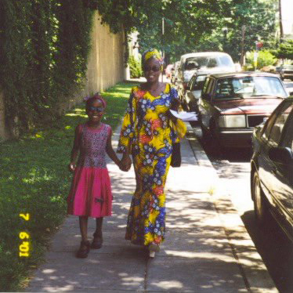

Likando Kumoyo
Originally from Lusaka, Zambia and having lived in the U.S., Tunisia, Egypt and France Likando has a global perspective and openness to different cultures. However, as she evaluated the future opportunities of her artistic career, it was evident that there are certain obstacles facing contemporary African artists and designers due to the lack of cultural understanding and representation in the Western art world.
This became the inspiration and focus for her Thesis year project and developed into the Unmasking Africa workshops.
